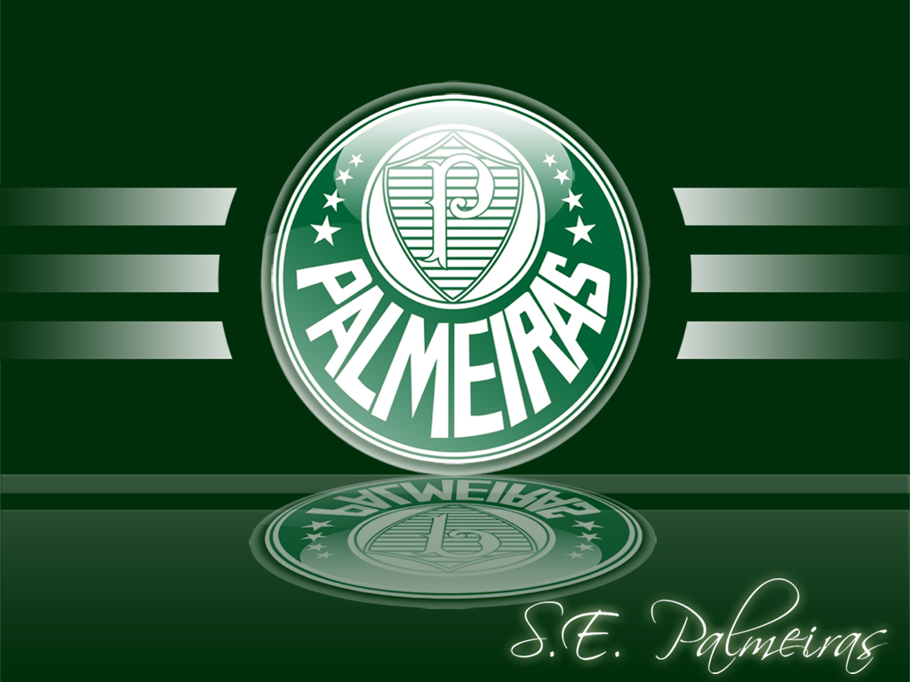
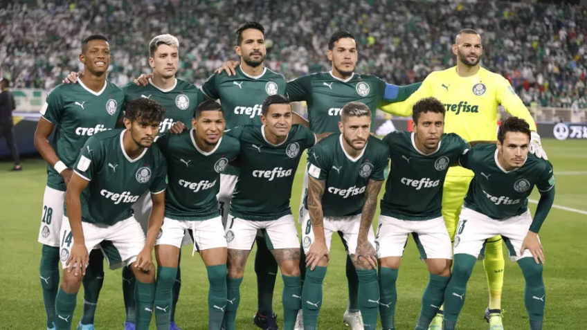

Bem-vindo ao Palmeiras
A Sociedade Esportiva Palmeiras (conhecida popularmente como Palmeiras) é um clube poliesportivo brasileiro da cidade de São Paulo, capital do estado homônimo. Foi fundado em 26 de agosto de 1914 e suas cores, presentes no escudo e bandeira oficial, são o verde e branco. O vermelho, presente desde sua fundação em 1914, foi excluído durante a Segunda Guerra Mundial, por pressão do governo nacional, na mesma reunião que formalizou a mudança de nome de Palestra Itália para Palmeiras.
Tem como modalidade esportiva principal o futebol, como um dos clubes mais vencedores e de maior relevância em todo o continente, além de estar entre aqueles com maior torcida do país. Seus títulos mais importantes conquistados no futebol são as Copas Libertadores da América de 1999, 2020 e de 2021,(recordista brasileiro ao lado de Grêmio, Santos e São Paulo) a Copa Rio de 1951, considerado na época como um Mundial de Clubes de futebol e reconhecido como tal pela FIFA, por meio do presidente da entidade, Joseph Blatter, em agosto de 2014, sendo uma decisão do Comitê Executivo da FIFA de 7 de junho e por meio de documento encaminhado ao Ministério do Esporte do Brasil em novembro do mesmo ano. A entidade, no entanto, não reconhece a competição como um torneio FIFA e reforçou este posicionamento em outubro de 2017, quando reconheceu os vencedores da Copa Intercontinental como campeões mundiais, sem, também, promover a unificação da Copa Intercontinental com a sua atual competição.
